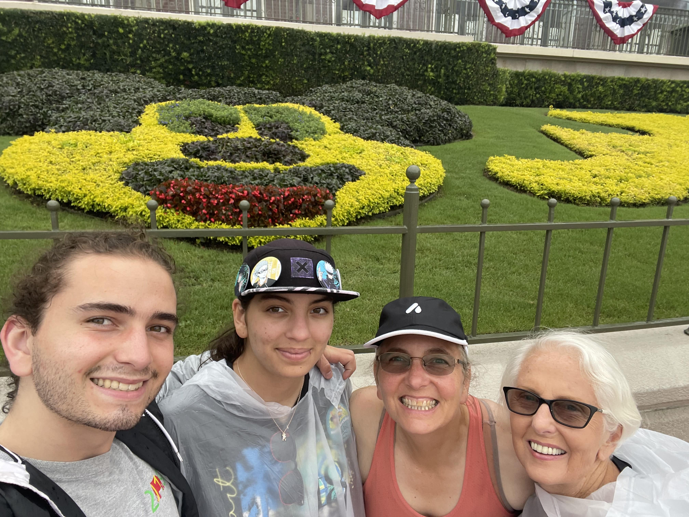

Back to CS20 homework assignments
My IP address: IPv4 is 66.31.18.243, but my IPv6 right now is 2601:184:4881:8be0:68aa:8d0f:da8:f58f
I grew up in Morgan Hill, California, west coast best coast. Although I love California, I also really enjoy being out on the east coast because the snow is just amazing!
I had both my arms broken at the same time when I was in 1st grade, the story behind why is very silly: for one of them I tripped while carrying apples back from a garden, and the other I was playing tag 6 weeks later (1 week before I got the cast off the first arm), and I ran into a cement retaining wall... SILLY
Its hard to say my faroite place, but I would say one of my favorite places is with the people I love in CA, I sadly dont have any good pictures of me and a group of people all from home in CA. So, here is a picture of another of my favorite places, Disney!!
